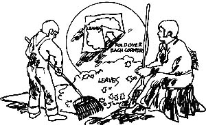

Here are a few of THE Mother Earth News(restricted) sydicated features which have appeared ijn 100+ newspapers over the past three and a half years.
Right now, Mother Nature is providing the wise gardener with all the good compost and soil building materials he could ask for . . . free for the gathering!
Raking leaves is an old autumn ritual that involves the whole family. And one of the easiest ways to haul those leaves to the compost pile is with a goodly section of recycled canvas or worn out bed sheet.
Clear an area the size of your tarp and spread the canvas out flat. Then simply rake the surrounding leaves onto the sheet, pile them in its center, fold over each comer to trap the heap and tote it to the compost bin. For best results shred the leaves before adding them to the pile.
Government and energy industry spokesmen are predicting severe fuel shortages in some areas of the U.S. and Canada during the coming frigid weather. If you haven't already done so, then, this is definitely the time to "batten down the hatches" for winter.
A special committee for the Office of Consumer Affairs has reported that storm windows can conserve enough heat anywhere north of Richmond, Virginia to pay for their installation within 10 years plus return an annual 6% dividend on initial cost. That's at current fuel prices. As the expense of oil, coal, gas and electricity increases (and it will), those extra windows will justify their expense in even less time. And if you really can't afford double glazing? Relatively in expensive weatherstripping and caulking applied around all the doors and windows on a house can cut a family's annual heating bill by as much as 15 to 30%.
The OCA paper further states that six inches of insulation applied over the ceiling of a home's top floor will pay for itself in one year in Richmond, Virginia or any other location that has an average winter temperature of 45° F or lower. Prevent warmed living-space air from leaking up into the attic and you'll greet spring with even more unspent dollars in your pocket.
And once you've chinked your dwelling and every room is as snug as a bug, try wearing a sweater in the house and setting your residence's thermostat two to four degrees lower than the temperature you've come to consider as "normal". Once again, you'll save fuel (and money) and-according to the British, at least-be healthier during the coming months to boot.
At one time or another, nearly every one of us has sung that song ... but how many people do you know who have actually eaten short'nin' bread? Very few. How often, in fact, have you even seen a recipe for short'nin' bread? Probably never.
It was with great interest, then, that I recently noted the formula for genuine, down-home short'nin' bread in what was left of an old spiral-bound copy of something called Charleston Receipts. I know nothing more about this book, since the first 12 and the last I-don't-know-how-many pages are missing ... but I'm guessing that it's a "vanity" cookbook published approximately 20 years ago in Charleston, South Carolina.
At any rate, I found-on page 161 of the collection-Mrs. Henry F. Church's recipe for short'nin' bread. I've tried it, it's good (in a Lorna Doone cookie sort of way) and here's how you can make your own:
Cream one-quarter pound of soft butter and one-fourth cup of light-brown sugar. Add one and one-half cups of flour and roll the mixture out quickly about one-half inch thick on a floured board. Cut the dough with a small biscuit cutter and bake on a lightly greased and floured cookie sheet for approximately 20 minutes at 350° F.
Eat the little cookies hot or cold ... and you'll know why mammy's little baby really did love short'nin' bread!
|
 |
|
|